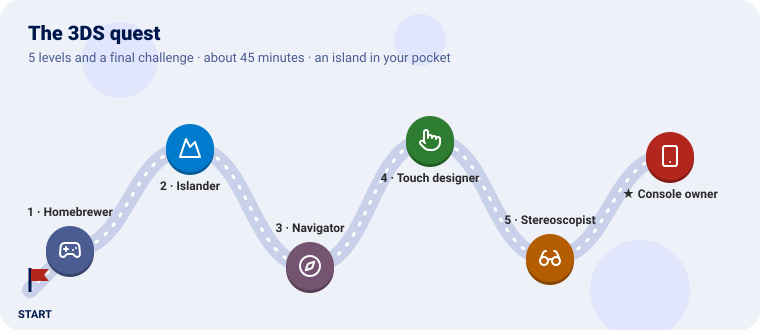
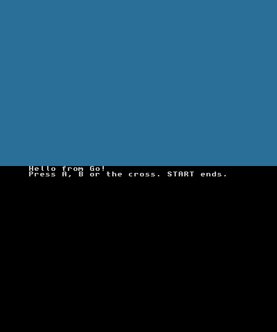
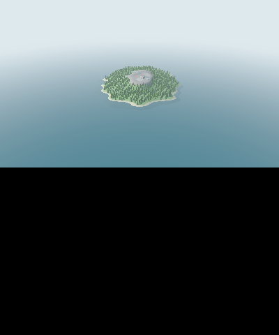
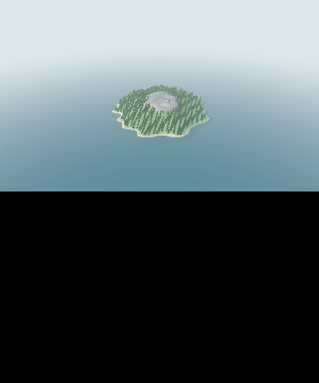
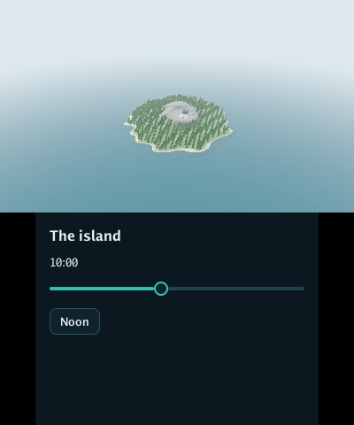
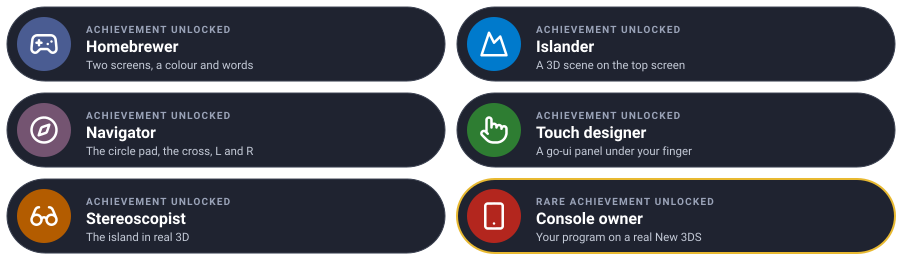

Put a Go program on a Nintendo 3DS, one level at a time. Each level teaches one piece of Go for 3DS
and ends with a .3dsx you can run in an emulator or on the console.

We start with words on the bottom screen, then put Go Renderer’s sample island on the top one, turn it with the circle pad, add a Go UI panel to touch below, switch on the real 3D, and finally copy it to an SD card.
Every level has the same shape: the idea (explained with something from everyday life), the code, a checkpoint to know it works, and an optional bonus.
You need:
| Why | Where | |
|---|---|---|
TinyGo with the nintendo3ds target |
Go does not build for the 3DS; this fork of TinyGo does | tinygo-3ds’s releases (v0.42.0-3ds.1: LLVM inside, nothing else to install), or built from its main (its NINTENDO3DS.md) |
| devkitPro’s 3DS packages | The console’s libraries: libctru, citro3d, 3dstools | dkp-pacman -S 3ds-dev (devkitpro.org); tinygo-3ds finds it in $DEVKITPRO, or /opt/devkitpro |
| An emulator (optional) | To try a program without the console | Azahar |
Make a module for the quest and ask for Go for 3DS, which brings the versions of Go Renderer and Go UI that draw on the console with it:
mkdir homebrew && cd homebrew
go mod init example.com/homebrew
go get github.com/akrck02/go-3ds@latest
Build any level, and open it:
go mod tidy
tinygo build -target=nintendo3ds -o hello.3dsx ./hello
azahar hello.3dsx
Every file starts with //go:build nintendo3ds: these programs only build for the console.
| Mission | Pieces | Time |
|---|---|---|
| A colour above, words below, and the buttons you press | ctr.Open, OpenBottomConsole, app.Run, frames |
10 min |
A game console runs a flip book: sixty pages a second, each drawn and then shown. Your program
is called once a page (app.Run’s function), reads the buttons, draws, and hands the page over
(ctr.EndFrame), which waits for the screen.
Homebrew is a program the console was not sold with, opened from the Homebrew Launcher.
hello/main.go:
//go:build nintendo3ds
// Your first homebrew: a colour on the top screen, words on the bottom one, and the buttons you
// press.
package main
import (
"fmt"
"github.com/akrck02/go-3ds/app"
"github.com/akrck02/go-renderer/ctr"
"github.com/akrck02/go-renderer/input"
)
// sea is the top screen's colour, 0xRRGGBBAA.
const sea = 0x2a6f97ff
func main() {
screen, err := ctr.Open() // the graphics system and the top screen
if err != nil {
println(err.Error())
return
}
defer screen.Close()
ctr.OpenBottomConsole() // the bottom screen becomes a terminal: what the program prints goes there
fmt.Println("Hello from Go!")
fmt.Println("Press A, B or the cross. START ends.")
keys := []input.Key{input.KeyEnter, input.KeyEscape, input.KeyUp, input.KeyDown, input.KeyLeft, input.KeyRight}
names := []string{"A", "B", "up", "down", "left", "right"}
app.Run(func(frame app.Frame) bool {
for index, key := range keys {
if frame.Input.Pressed(key) {
fmt.Println("pressed", names[index])
}
}
ctr.BeginFrame()
screen.Clear(sea)
ctr.EndFrame() // waits for the screen: one frame each sixtieth of a second
return true // false would end the program
})
}
ctr.Open starts the graphics: always first. app.Run reads the controls into Go Renderer’s
input.State, the same as on a desktop: A is Enter, B is Escape, the cross is the arrows.
The top screen is sea blue; the bottom one says Hello from Go!, and a line for every button you press. START ends the program.

frames := 0
app.Run(func(frame app.Frame) bool {
frames++
if frames%60 == 0 {
fmt.Println(frames/60, "seconds")
}
…| Mission | Pieces | Time |
|---|---|---|
| The sample island in 3D on the top screen | ctr.NewSceneRenderer, Draw, a camera |
5 min |
Go Renderer describes a scene the same way everywhere; only the painter changes. On the
desktop it is OpenGL or Metal; on the 3DS it is citro3d, the console’s own, through ctr. The
scene, the camera and the sample island are the same as on a computer.
island/main.go:
//go:build nintendo3ds
// The sample island on the top screen, seen from a camera that stands still.
package main
import (
"github.com/akrck02/go-3ds/app"
"github.com/akrck02/go-renderer/ctr"
"github.com/akrck02/go-renderer/graphics"
"github.com/akrck02/go-renderer/models"
"github.com/akrck02/go-renderer/scene/sample"
)
func main() {
screen, err := ctr.Open()
if err != nil {
println(err.Error())
return
}
defer screen.Close()
renderer, err := ctr.NewSceneRenderer(screen) // draws a go-renderer scene through citro3d
if err != nil {
println(err.Error())
return
}
world := sample.Island() // the same made-up island the desktop viewer opens with -sample island
view := models.Camera{
Position: graphics.Vec4{300, 220, 300, 1}, // metres east, up and south of the middle
Target: graphics.Vec4{0, 0, 0, 1},
Up: graphics.Vec4{0, 1, 0, 0},
Far: 20000,
}
app.Run(func(frame app.Frame) bool {
renderer.Draw(world, view) // begins the frame, draws and shows it
return true
})
}
The island in the middle of the sea, with its forest and village, under a hazy sky.

Learn more: Go Renderer on the 3DS
| Mission | Pieces | Time |
|---|---|---|
| Turn round the island with the circle pad | frame.Reading.Circle, camera.Orbit |
6 min |
The circle pad is a joystick: it says how far it is pushed each way, from −1 to 1. The orbit camera is the desktop viewer’s: it circles round a point, and here the pad turns it instead of the mouse. The cross and L, R already speak the camera’s language: arrows and minus, plus.
//go:build nintendo3ds
// The island on the top screen, turned with the circle pad and the cross, nearer and further with
// L and R.
package main
import (
"github.com/akrck02/go-3ds/app"
"github.com/akrck02/go-renderer/camera"
"github.com/akrck02/go-renderer/ctr"
"github.com/akrck02/go-renderer/graphics"
"github.com/akrck02/go-renderer/input"
"github.com/akrck02/go-renderer/models"
"github.com/akrck02/go-renderer/scene/sample"
)
func main() {
screen, err := ctr.Open()
if err != nil {
println(err.Error())
return
}
defer screen.Close()
renderer, err := ctr.NewSceneRenderer(screen)
if err != nil {
println(err.Error())
return
}
world := sample.Island()
orbit := camera.NewOrbit(graphics.Vec4{0, 0, 0, 1}, 450) // the desktop viewer's orbit camera
orbit.Pitch = 0.5
orbit.Ground = world.GroundHeight // it never goes under the ground
view := models.Camera{Far: 20000}
app.Run(func(frame app.Frame) bool {
// The circle pad, from −1 to 1 each way: turn left and right, tilt up and down.
circleX, circleY := frame.Reading.Circle()
orbit.Yaw -= circleX * 1.8 * frame.Seconds
orbit.Pitch += circleY * 1.2 * frame.Seconds
// The cross is the arrows and L, R are minus and plus, which the orbit already reads; the
// touch screen is left out, so a finger does not turn the island.
keys := *frame.Input
keys.SetButton(input.MouseLeft, false)
orbit.Update(&keys, frame.Seconds, &view)
renderer.Draw(world, view) // begins the frame, draws and shows it
return true
})
}
The same island, and now the circle pad turns round it and tilts it, the cross does too, L and R go further and nearer. The camera never sinks under the ground.

| Mission | Pieces | Time |
|---|---|---|
| A Go UI panel on the touch screen: the time of day | secondscreen.New, Paint, both screens in one frame |
10 min |
The bottom screen is a touch screen, so it is the pointer: a finger or the stylus presses
Go UI’s buttons and drags its sliders exactly as a mouse would. secondscreen lays a Go UI interface out
there in a theme made for fingers, in the sea’s colours.
Both screens are drawn in one frame: between ctr.BeginFrame and ctr.EndFrame, the island
with PaintStereo (Draw would begin and end a frame of its own) and then the panel.
//go:build nintendo3ds
// The island above, and below a go-ui panel touched with a finger: the time of day.
package main
import (
"fmt"
"math"
"github.com/akrck02/go-3ds/app"
"github.com/akrck02/go-3ds/secondscreen"
"github.com/akrck02/go-renderer/camera"
"github.com/akrck02/go-renderer/ctr"
"github.com/akrck02/go-renderer/graphics"
"github.com/akrck02/go-renderer/input"
"github.com/akrck02/go-renderer/models"
"github.com/akrck02/go-renderer/scene"
"github.com/akrck02/go-renderer/scene/sample"
ui "github.com/akrck02/go-ui"
)
func main() {
screen, err := ctr.Open()
if err != nil {
println(err.Error())
return
}
defer screen.Close()
renderer, err := ctr.NewSceneRenderer(screen)
if err != nil {
println(err.Error())
return
}
panel, err := secondscreen.New(secondscreen.Theme()) // go-ui on the bottom screen, in a theme for fingers
if err != nil {
println(err.Error())
return
}
world := sample.Island()
orbit := camera.NewOrbit(graphics.Vec4{0, 0, 0, 1}, 450)
orbit.Pitch = 0.5
orbit.Ground = world.GroundHeight
view := models.Camera{Far: 20000}
hour, litHour := float32(10), float32(-1)
app.Run(func(frame app.Frame) bool {
circleX, circleY := frame.Reading.Circle()
orbit.Yaw -= circleX * 1.8 * frame.Seconds
orbit.Pitch += circleY * 1.2 * frame.Seconds
keys := *frame.Input
keys.SetButton(input.MouseLeft, false)
orbit.Update(&keys, frame.Seconds, &view)
// Both screens in one frame: Paint* draws inside it, where Draw would begin and end its own.
ctr.BeginFrame()
renderer.PaintStereo(world, view, 0, 0) // one picture: no separation between the eyes
panel.Paint(frame.Input, func(context *ui.Context) {
context.Box(ui.Layout{Direction: ui.Vertical, Width: ui.Grow(), Padding: ui.Pad(16), Gap: 12}, func() {
context.Heading("The island")
context.Label(fmt.Sprintf("%02d:00", int(hour)))
context.SliderStep("hour", &hour, 0, 23, 1)
if context.Button("Noon") {
hour = 12
}
})
})
ctr.EndFrame()
// A new light works the island's colours out again on the processor: only once the finger
// leaves the screen, or every step of a drag would stutter.
if hour != litHour && !frame.Input.Button(input.MouseLeft) {
light(world, hour)
litHour = hour
}
return true
})
}
// light puts the sun where it is at an hour: rising in the east at six, highest at noon, setting
// in the west at six in the evening.
func light(world *scene.Scene, hour float32) {
angle := float64(hour-6) / 12 * math.Pi
elevation := math.Sin(angle) * 1.1
sun := graphics.Vec4{float32(-math.Cos(angle) * math.Cos(elevation)), float32(math.Sin(elevation)), float32(-0.35 * math.Cos(elevation)), 0}
world.Environment.SunDirection = sun.Normalize()
}
The light is worked out again only once the finger leaves the screen: on the 3DS the island’s colours are computed on the processor for each light, which would make a drag stutter.
Below, The island, the hour and a slider: drag it and let go, and the island turns to evening or morning; Noon brings back the midday sun.

fog := true
…
if context.Toggle("Fog", &fog) {
world.Environment.FogNear, world.Environment.FogFar = 250, 900
if !fog {
world.Environment.FogFar = 0
}
}Learn more: Go UI on the 3DS
| Mission | Pieces | Time |
|---|---|---|
| Real 3D with the slider | ctr.Slider3D, PaintStereo with a separation |
4 min |
Your eyes are about six centimetres apart, and each sees the world a little differently; the brain makes depth of the difference. The 3DS’s top screen shows each eye its own picture. The renderer draws the scene twice, from two eyes a little apart, as far apart as the 3D slider on the console’s side says.
Only the frame changes from level 4:
// The 3D slider, from 0 to 1, sets how far apart the two eyes stand: a share of the
// distance to what the camera looks at. At 0 the screen shows one picture.
separation := ctr.Slider3D() * float32(orbit.Distance) * 0.03
ctr.BeginFrame()
renderer.PaintStereo(world, view, separation, float32(orbit.Distance))
What lies at the focal distance (the point the camera turns round) sits on the screen; nearer things come out of it, further ones go in.
With the slider down, the same picture as before. Push it up on a console: the island stands out of the screen. (An emulator shows one eye.)
Run your program on a real New 3DS: copy it to the SD card, open it from the Homebrew Launcher, and share it with the notices it must carry.
Hint: the Homebrew Launcher lists the
.3dsxfiles in/3ds/on the SD card. A.3dsxcarries TinyGo, libctru, citro3d and newlib: their licences go with it.

You built Go for a handheld console: two screens, a 3D scene, its controls, an interface under your finger, and real 3D.
| Idea | Difficulty | Hint |
|---|---|---|
| Fly to places on the island | ⭐ | cmd/explorer eases the camera to a point chosen on its panel |
| A map of the island on the panel | ⭐⭐ | cmd/explorer’s islandMap: a draw2d.Image drawn from world.GroundHeight |
| A Go UI application, unchanged | ⭐⭐ | Go UI’s window.Run on its feature/3ds branch puts the scene above and the interface below |
| Sound | ⭐⭐ | Go Sound plays through the DSP; it needs /3ds/dspfirm.cdc |
| You see | Why, and what to do |
|---|---|
| An exception occurred … Undefined Instruction, PC 0 | Something of ctr was used before ctr.Open, such as OpenBottomConsole: open first |
| Exception Type: Break when drawing both screens | Draw begins and ends its own frame: inside BeginFrame … EndFrame, use PaintStereo |
build constraints exclude all Go files with go build |
These programs are for TinyGo’s nintendo3ds target only |
| Works in the emulator, stops on the console | The emulator forgives reads of unmapped memory: run it with Go for 3DS’s tools/run-in-azahar.sh, which warns of them |
| A drag on the panel stutters | Work done every frame on the processor: do it when the finger leaves (!frame.Input.Button(input.MouseLeft)) |